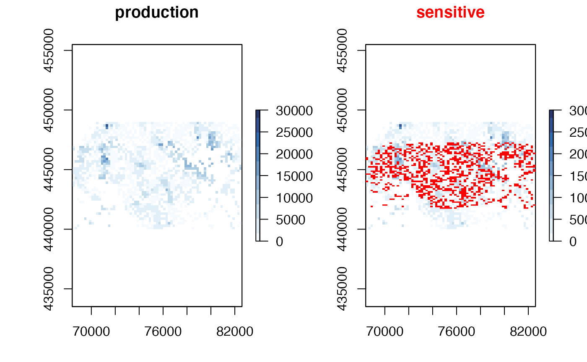
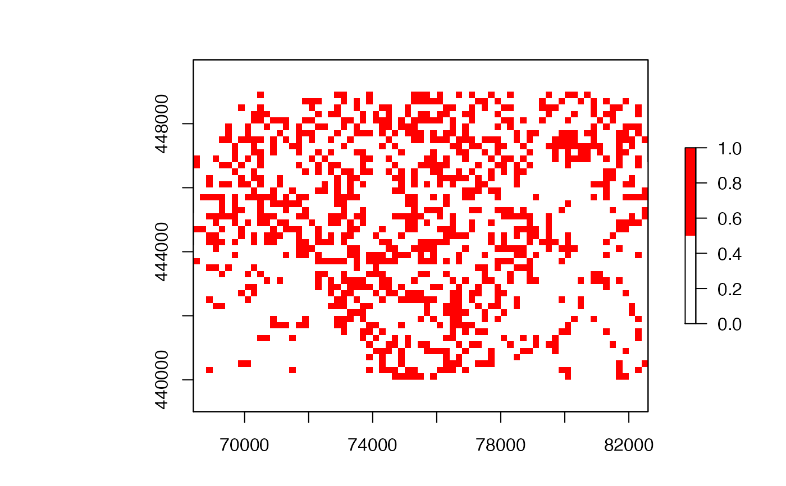
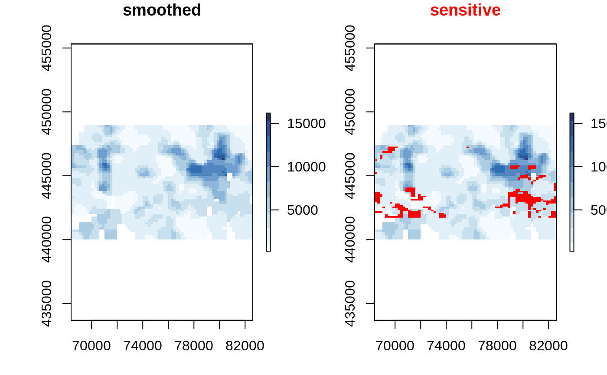
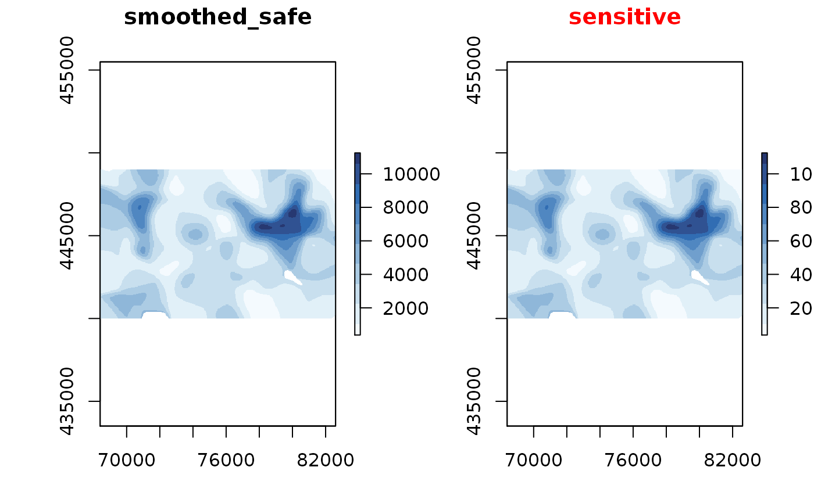
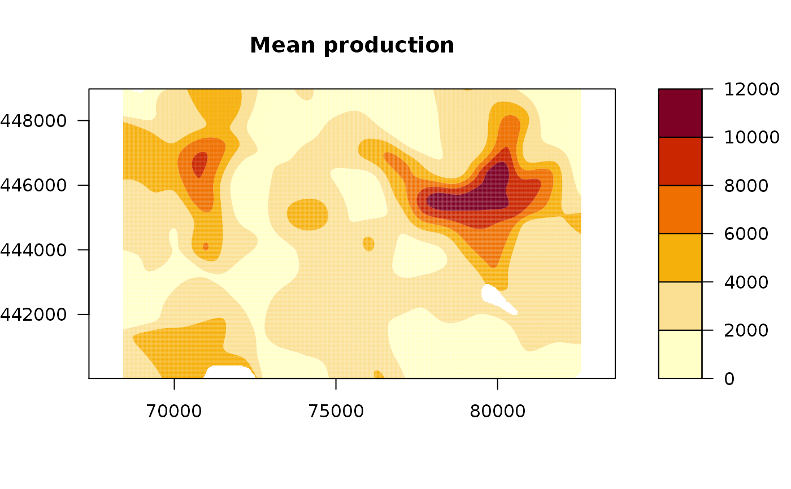
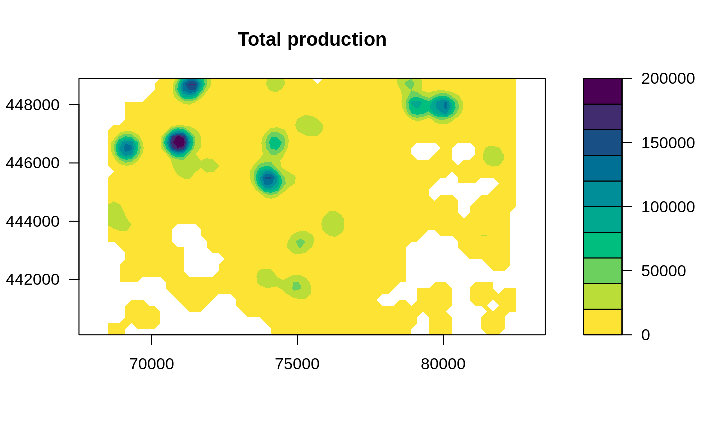

Protect a sdc_raster by smoothing.
protect_smooth(x, bw = raster::res(x$value), ...)
| x | raster object |
|---|---|
| bw | bandwidth |
| ... | passed through to |
Other protection methods: protect_quadtree,
remove_sensitive
library(sdcSpatial) library(raster) # create a sdc_raster from point data with raster with resolution of 200m production <- sdc_raster(enterprises, variable = "production", r = 200, min_count = 3) print(production)#> numeric sdc_raster object: #> resolution: 200 200 , max_risk: 0.95 , min_count: 3 #> mean sensitivity score [0,1]: 0.6328234# plot the raster zlim <- c(0, 3e4) # show which raster cells are sensitive plot(production, zlim=zlim)# but we can also retrieve directly the raster sensitive <- is_sensitive(production, min_count = 3) plot(sensitive, col = c('white', 'red'))#> [1] 0.6328234#> [1] 0.6328234# let's smooth to reduce the sensitivity smoothed <- protect_smooth(production, bw = 400) plot(smoothed)#> [1] 0.1779744# let's remove the sensitive data. smoothed_safe <- remove_sensitive(smoothed, min_count = 3) plot(smoothed_safe, zlim=zlim)# let's communicate! production_mean <- mean(smoothed_safe) production_total <- sum(smoothed_safe) # and cread filledContour(production_mean, nlevels = 6, main = "Mean production")filledContour(production_total, nlevels = 15, col = hcl.colors(21, rev=TRUE), main="Total production")